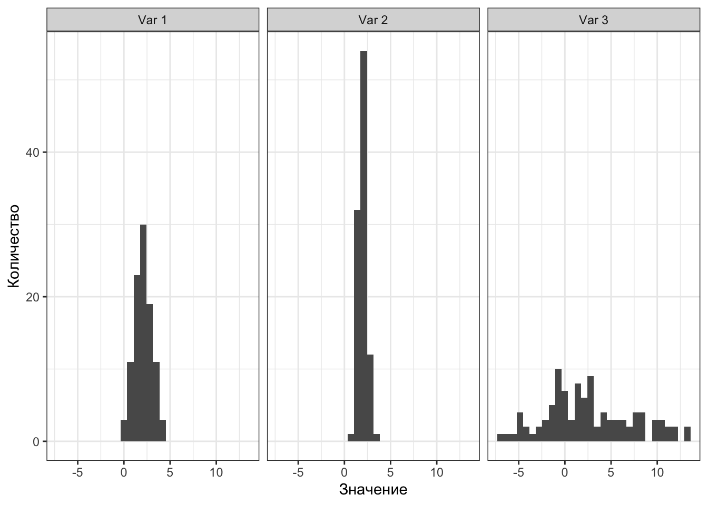

4 Меры разброса
Итак, мы разобрались с мерами центральной тенденции. Однако для описания распределения их оказывается недостаточно. Почему?
4.1 Зачем нужны меры разброса
Посмотрим на несколько распределений:
Методом пристального взгляда можно установить, что у всех распределений одинаковые средние:
Однако мы видим, что значения по-разному группируются вокруг среднего. Как они группируются — плотно, как на втором рисунке, или не особо, как на третьем — можно описать с помощью мер разброса, или мер вариативности.
4.2 Основные характеристики статистических данных
Вообще если посмотреть на это более свысока, то необходимость описания разброса определяется тем, что статистические данные обладают двумя ключевыми особенностями — неопределенностью и вариативностью.
- Неопределённость нам говорит о том, что мы не знаем, что именно мы получим в результате наших измерений для конкретной выборки. В том числе потому, что мы работаем на просторах случайных величин.
- Вариативность означает, что наши данные будут различаться ещё и от респондента к респонденту. И между выборками тоже. Здесь и ошибка измерения, и различные смешения и ещё куча всего.
Более того, вариативность есть главное условие применения статики, поскольку она входит в расчёт любого статистического критерия. Если у переменной отсутствует вариативность, статистика на ней работать не будет.
4.3 Минимум, максимум, размах
Начнем с самого простого. Как наиболее просто описать вариативность? Мы работаем с выборкой, а в выборке, как известно, ограниченное число наблюдений. А если оно ограниченное, значит среди них точно есть наибольшее — максимум (max) — и наименьшее — минимум (min).
Допустим, мы открыли ведомость по «Анатомии и физиологии ЦНС» некоторой академической группы и пронаблюдали следующее:
[1] 7 4 6 9 10 5 6 9 6 6 3 6 8 8 5 10 7 5 7 3 9 4 8 3 8
[26] 4 6 8 7 5Мы можем посчитать минимальное и максимальное значение по этому ряду наблюдений — они окажутся равны соответственно 3 и 10. То есть оценки по этой дисциплине варьируются от 3 до 10. Ну, чу́дно.
Разница между максимальным и минимальным значением называется размах (range):
\[ \text{range}(X) = \max(X) - \min(X) \]
В примере выше он будет равен 7.
И вот мы преисполнившиеся сим знанием идёт описывать вариативность переменной с помощью размаха, но обнаруживаем в другой ведомости этой же группы (по «Введению в психологию») вот что:
[1] 6 8 4 6 7 5 7 10 4 6 7 8 7 6 8 10 8 7 7 6 8 7 6 8 6
[26] 3 8 6 6 4Минимум, максимум и размах вроде как такие же: 3, 10 и 7 соответственно.
Значит ли это, что вариативность одинаковая? Нарисуем.

Кажется, что вариативность различна. Распределение оценок по «Анатомии и физиологии ЦНС» более равномерное, в то время как оценки по «Введению в психологию» активнее группируются где-то в середине.
Штош, размах хоть и дает нам некоторую информацию о вариативности, нам этого маловато. Будем искать другие меры разброса.
4.4 Квантили
Возьмем распределение суммарного балла по шкале толерантности к неопределенности. Выглядит оно как-то так:
Теперь нам понадобится определение квантиля распределения.
Определение 4.1 Квантиль (quantile) — это значение переменной, которое не превышается с определенной вероятностью.
Обозначим эту вероятность \(p\). Тогда можно сказать, что квантиль уровня \(p\) — это такое значение переменной, слева от которого лежит \(p\%\) наблюдений.
Посмотрим на картинки.
Слева относительно квантиля-0.05 (\(x_{0.05}\)) лежит 5% наблюдений:
Слева относительно квантиля-0.68 (\(x_{0.68}\)) лежит 68% наблюдений:
Слева относительно квантиля-0.99 (\(x_{0.99}\)) лежит 99% наблюдений:
Итак, мы поняли, а также приняли и осознали, что такое квантиль. Неясно только, как он нам поможет описать вариативность данных.
4.4.1 Квартили
Для этого нам пригодятся специально обученные квантили. Оказалось достаточно удобно поделить все наблюдение на четыре равные части — вот так:

Значения переменной, которые делят выборку на четыре равные части называются квартили (quartile). Получается, что
- слева от первого (нижнего) квартиля (\(\text{Q1}, x_{0.25}\)) лежит 25% наблюдений
- слева от второго (среднего) квартиля (\(\text{Q2}, x_{0.50}\)) лежит 50% наблюдений
- а значит и справа 50%: получается второй квартиль делит выборку пополам — это медиана
- слева от третьего (верхнего) квартиля (\(\text{Q3}, x_{0.75}\)) лежит 75% наблюдений
Четвертый квартиль не используется, потому что является максимальным значением — слева от него лежит 100% наблюдений.
Кстати, можно также отметить, что первый квартиль — это медиана нижней (меньшей) половины наблюдений, а третий — медиана верней (большей) половины наблюдений.
Вот такая вот прикольная история.
4.4.2 Децили
К слову, делить выборку можно не только на четверти — можно поделить, скажем, на 10 частей и получить децили. Так, слева от первого дециля (\(x_{0.10}\)) лежит 10% наблюдений, а слева от третьего (\(x_{0.30}\)) — 30%.
Децили встречаются редко (в основном в психометрике), но знать о них полезно.
4.4.3 Перцентили
Гораздо чаще встречаются перцентили — значения переменной, которые делят выборку на 100 равных частей. Например, так устроен ваш рейтинг. Только стоит помнить, что в рейтинге отсчет ведется от максимального GPA, поэтому если у вас нулевой перцентиль (\(x_{0.00}\)) по программе, значит выше вас в рейтинге никого нет. А если ваш перцентиль, скажем, 36-ой (\(x_{0.36}\)), то выше вас в рейтинге 36% ваших однокурсников, то есть вы все ещё в первой половине рейтинга, что очень неплохо!
4.5 Интерквартильный размах
И — о, ура! — мы наконец-то добрались до того, ради чего тут собрались! Зная первый и третий квартили распределения, можно рассчитать интерквартильный (межквартильный) размах (interquartile range, IQR) как разницу между третьим и первым квартилями.
\[ \text{IQR}(X) = \text{Q3}(X) - \text{Q1}(X) \]
Эта величина описывает интервал значений признака, в котором лежит 50% наблюдений. В случае с баллами по шкале толерантности к неопределенности он равен 24, то есть 50% срединных наблюдений лежит в пределах 24 единиц шкалы.
4.5.1 Визуализация квартилей. Боксплот
Отображать квартили на гистограмме, во-первых, совершенно неудобно, а во-вторых, не то чтобы график получается информативный. Для визуализации квартилей придумали специальный тип графика — ящик с усами, или боксплот (boxplot).
Прикольная ерунда. Научимся его читать.
- Значения переменной идут по вертикальной оси (оси ординат)1
- По горизонтальной оси (оси абсцисс) здесь ничего не идёт2
- Жирная линия посередине ящика — медиана (второй квартиль)
- Нижняя граница ящика — первый квартиль, верхняя — третий
- Границы ящика показывают нам межквартильный размах
- Нижний ус — первый квартиль минус полтора межквартильных размаха
- Верхний ус — третий квартиль плюс полтора межквартильных размаха
Кривой ящик
Ящик может быть асимметричным — то есть верхняя его часть (расстояние между медианой и третьим квартилем) и нижняя его часть (расстояние между медианой и первым квартилем) могут быть разными. Это нам говорит об асимметричности распределения. Усы также могут быть неравными, если один из них упирается в максимум / минимум — тоже по причине асимметричности распределения.
Ну, допустим. А что тогда точки?
4.5.2 Выбросы
Вообще справедливо было бы задаться вопросом, а зачем нам вообще усы на этом графике? И почему мы прибавляем полтора межквартильных размаха?
Это один из подходов к определению нехарактерных значений — выбросов (outliers). При исследовании данных мы часто задаемся вопросом, есть ли в наших данных такие значения, которые сильно отличаются от распределения той или иной переменной. Но как определить это самое «сильно»?
Вот один из подходов. Будем считать, что значения, которые укладываются в интервал \((\text{Q1} - 1.5 \times \text{IQR}, \text{Q3} + 1.5 \times \text{IQR})\), нас устраивают. Всё что попадает в этот интервал — это «нормальные», типичные значения нашей переменной. Те же, которые будут находиться за пределами этого интервала, мы назовём нетипичными, аномальными значениями, или выбросами. Эти значения и будут отмечены точками на графике.
Что делать с выбросами?
Во-первых, содержательно анализировать. Выбросы могут возникнуть по разным причинам. Может быть испытуемый отвлекся на прилетевшего в окно голубя, и у нас в данных появилось время реакции 200 секунд. Такие выбросы мы можем исключить из данных.
А возможно в нашу выборку попали какие-то люди, которые, скажем, очень сильно или очень слабо толерантны к неопределенности. Эти наблюдения не являются «ошибками», и их необходимо дополнительно проанализировать — возможно, это представители каких-либо специфических групп нашей генеральной совокупности. Анализ принесет нам дополнительную информацию, которую мы могли не учесть при планировании исследования. Крч, думать надо. И собирать побольше данных, чтобы можно было найти содержательную интерпретацию происходящему.
4.6 Дисперсия
Хотя описание разброса переменных с помощью квантилей (в частности, квартилей) может дать нам много полезной информации, все же у них есть существенный недостаток: они никак не взаимодействуют с самими значениями нашей переменной.
Действительно, мы делим нашу отсортированную выборку на равные части, и смотрим, что в эти части попало. Но хотелось бы как-то учесть ещё и сами значения переменной в некоторой числовой мере разброса.
Ну, хорошо. Поступим следующим образом. Мы все ещё хотим узнать, как наши значения группируются вокруг среднего. В предыдущей главе мы уже видели, что наши наблюдения отклоняются от среднего значения — значит мы можем посчитать отклонение для каждого наблюдения (\(d\) — от лат. вумшфешщт или англ. deviation):
\[ d_i = \overline X - x_i \]
Окей. Если мы сложим все отклонения и поделим получившуюся сумму на их количество, равное количеству наблюдений (\(n\)), то получим среднее отклонение, да?
В принципе, да:
\[ \overline d = \frac{1}{n} \sum_{i=1}^n d_i = \frac{1}{n} \sum_{i=1}^n (\overline X - x_i) \]
Однако есть одна проблема. В прошлой главе мы выяснили, что сумма отклонений от среднего равна нулю (Утверждение 3.3), а значит и cреднее отклонение также будет равно нулю.
Хорошо. Но отрицательные значения ведь можно победить! Есть два пути:
- Модуль. Преимущество первого в том, что размерность величины разброса остается той же, что и у измеряемой переменной.
- Квадрат. Преимущество второго в том, что квадрат обладает более хорошими аналитическими свойствами, чем модуль, а ещё сильные отклонения будут оказывать более сильное влияние на окончательное значение статистики (см. Note 4.1).
Второй путь на практике оказывается полезнее, так как мы хотим, чтобы сильно отличающиеся наблюдения вносили больший вклад в меру разброса.
Возведя отклонения в квадрат, получим формулу дисперсии (вариации, variation):
\[ D(X) = \text{var}(X) = \sigma^2_X = \frac{1}{n} \sum_{i=1}^n d_i^2 = \frac{1}{n} \sum_{i=1}^n (\overline X - x_i)^2 \]
Гениально.
Заметка 4.1: Почему квадрат лучше модуля?
Рассмотрим два простейших примера. Пусть у нас есть два нехитрых ряда наблюдений:
[1] 1 2 3 4 5 6[1] 1 2 3 4 5 20Как несложно заметить, они отличаются друг от друга всего лишь одним наблюдением — в первом случае существенных отклонений нет, а во втором есть одно наблюдений, значительно отклоняющееся от всех остальных.
Попробуем посчитать разброс, используя модуль — формула будет такова:
\[ \text{MAD} = \frac{1}{n} \sum_{i=1}^n |d| = \frac{1}{n} \sum_{i=1}^n |\overline X - x_i| \]
Эта статистика называется среднее абсолютное отклонение (mean absolute deviation, MAD).
Для первого ряда наблюдений получим 1.5, для второго — 4.72.
Значения разброса, безусловно, различаются, однако не то чтобы очень значительно.
Теперь воспользуется формулой дисперсии:
\[ \text{var}(X) = \frac{1}{n} \sum_{i=1}^n d^2 = \frac{1}{n} \sum_{i=1}^n (\overline X - x_i)^2 \]
Для первого ряда наблюдений получим 2.92, для второго — 41.81.
В этой случае значения различаются уже гораздо сильнее — на целый порядок.
Отметим, что и в случае отклонений в меньшую от среднего сторону формулы не перестают работать. Возьмём такие ряды наблюдений:
[1] 15 16 17 18 19 20[1] 5 16 17 18 19 20Расчёты мер разброса для них представлены ниже.
| MAD (модуль) | Дисперсия (квадрат) | |
|---|---|---|
| Первый ряд | 1.5 | 2.92 |
| Второй ряд | 3.61 | 25.14 |
Но не совсем. Формула, которую мы получили, пригодна для расчета дисперсии генеральной совокупности — на выборке же она будет давать неточную оценку.
Чтобы получить точную (несмещенную) оценку дисперсии по выборке, нам нужно исправить знаменатель дроби — вместо \(n\) использовать \(n - 1\):
\[ s^2_X = \hat \sigma^2_X = \frac{1}{n-1} \sum_{i=1}^n d^2 = \frac{1}{n-1} \sum_{i=1}^n (\overline X - x_i)^2 \]
Но почему?
Обозначения параметров и их выборочных оценок
Обратим внимание на используемые обозначения.
- Для обозначения параметров генеральной совокупности используются греческие буквы, поэтому дисперсия генеральной совокупности обозначена как \(\sigma^2\).
- Для обозначения оценок параметров, полученных на выборке используются соответствующие греческим латинские буквы, поэтому выборочная дисперсия обозначена как \(s^2\).
Также для обозначения выборочных оценок может быть использована «шляпка», которая надевается на обозначение параметра — в случае дисперсии это выглядит как \(\hat \sigma^2\).
4.6.1 Свойства выборочных оценок
4.6.2 Степени свободы
Во всём виновата выборка.
Взглянем на формулу дисперсии: в неё входит среднее арифметическое. То есть для того, чтобы рассчитать дисперсию на выборке, сначала нам необходимо на этой же выборке рассчитать среднее. Тем самым, мы как бы «фиксируем» нашу выборку этим средним значением — у значений нашего распределения становится меньше свободы для варьирования. Теперь свободно варьироваться могут
n − 1 наблюдение, так как последнее всегда будет возможно высчитать, исходя из среднего значения. По этой причине нам необходимо корректировать исходную формулу расчета дисперсии.
А что если не корректировать?
Мы стремимся к тому, чтобы наши расчеты на выборке достаточно точно [на столько, на сколько это возможно] отражали то, что происходит в генеральной совокупности. Математики-статистики выяснили, что та оценка, которая хорошо подходит для расчета дисперсии генеральной совокупности, при применении на выборке даёт смещенные оценки. То есть оценка выборочной дисперсии по формуле дисперсии для генеральной совокупности содержит в себе смещение — некоторую систематическую ошибку. Это нехорошо.
К концепту степеней свободы мы ещё неоднократно вернемся. Сейчас хотелось бы, чтобы сформировалось какое-то минимальное более-менее освязаемое понимание того, почему они вообще нам нужны. Если на основе предыдущих абзацев раздела этого сделать не получилось, то давайте попробуеи воспользоваться следующим рассуждением.
На выборке происходят некоторые статистические преколы, которые несколько портят нам жизнь, и нам их неободимо учесть, чтобы адекватно оценивать то, что происходит в генеральной совокупности. В частности, нам необходимо учитывать количество степеней свободы, которое есть в нашей выборке. Для расчета выборочной дисперсии оно равно
n − 1 , так как мы для того, чтобы рассчитать дисперсию по выборке, нам сначала по той же самой выборке надо рассчитать ещё одну оценку — среднее арифметическое. Этот расчет заберет одну степень свободы у нашей выборки.
4.7 Стандартное отклонение
И вот мы получили невероятное! У нас есть формула расчета меры разброса, которая позволяет учесть сами значения переменной! Ну не чудо ли!
Чудо, конечно, однако есть некоторая проблема. Мы возводили отклонения в квадрат. Представим, что мы хотим посчитатить дисперсию роста студентов психфака. Пусть мы измеряли рост в метрах. Отклонения тоже будут в метрах (потому что среднее — это тоже метры, а если из метров вычитать метры, то мы получим метры). А при возведении метров в квадрат получаются метры в квадрате. Очевидно, что если мы модели квадратные метры на некоторое число ( n ), они все еще останутся метрами в квадрате.
О, нет! А счастье было так близко, так возможно! Получается, мы не можем интерпретировать эту меру разброса? Не сможем даже нарисовать?
Да, но это не очень большая беда. Для того, чтобы вернуться обратно к единицам измерения нашей переменной, нам всего лишь нужно извлечь корень из дисперсии:
5 σ
√ σ 2 = ⎷ 1 n n ∑ i = 1
( ¯ x − x i ) 2
Мы получили величину, называемую стандартным отклонением (standard deviation). Чем она хороша? Тем, что её размерность совпадает с размерностью нашей переменной. Стандартное отклонение уже может быть достаточно интерпретабельно и хорошо визуализируемо.
Кстати, формула выше, которая что-то очень напоминает, — это стандартное отклонение генеральной совокупности, потому что под корнем стоит дисперсия генеральной совокупности.
Чтобы посчитать стандартное отклонение по выборке, нам надо извлечь корень из выборочной дисперсии:
6 s
√ s 2 = ⎷ 1 n − 1 n ∑ i = 1
( ¯ x − x i ) 2
6.1 Сравнение мер разброса
Как и разные меры центральной тенденции, разные меры разброса по-своему хороши. Более того, они дружат с мерами центральной тенденции. Так, с медианой используется мехквартильных размах, а со средним арифметическим — стандартное отклонение.
Размах подходит для всего сразу. Его стоит рассчитать, чтобы составить самое первое представление в разбросе, о границах измерения изучаемого признака [на нашей выборке].
Стоит также отметить, что все, что мы тут обсуждали, совершенно не годиться для номинативных переменных. Однако у них тоже есть вариативность. Согласитель, что выборка из Питера, Москвы, и Казани более вариативна, чем выборка из Москвы. Аналогом меры разброса для номинальной переменной можно назвать количество уникальных значений этой переменной.
6.2 Свойства дисперсии и стандартного отклонения
Если к каждому значению распределения прибавить некоторое число (константу), то дисперсия не изменится. D x + c = D x
Вот почему:
D x + c = ∑ n i = 1 ( ( ¯ x + c ) − ( x i + c ) ) 2 n − 1 = ∑ n i = 1 ( ¯ x + c − x i − c ) 2 n − 1 = ∑ n i = 1 ( ¯ x − x i ) 2 n − 1 = D x
Если каждое значение распределение умножить на некоторое число (константу), то дисперсия увеличится в
c 2 раз. D x × c = D x × c 2
Вот почему:
D x × c = ∑ n i = 1 ( c ¯ x − c x i ) 2 n − 1 = ∑ n i = 1 c 2 ( ¯ x − x i ) 2 n − 1 = c 2 ∑ n i = 1 ( ¯ x − x i ) 2 n − 1 = D x × c 2
Если к каждому значению распределения прибавить некоторое число (константу), то стандартное отклонение не изменится. s x + c = s x
Это следует из свойства дисперсии:
s x + c = √ D x + c = √ D x = s x
Как мы уже видели, распределение просто сдвигается на константу. Например, если к каждому значению синего распределения прибавить
2 , получится красное — разброс у обоих распределений одинаковый:
Если каждое значение распределение умножить на некоторое число (константу), то стандартное отклонение увеличится во столько же раз. s x × c = s x × c
Это также следует из свойства дисперсии:
s x × c = √ D x × c = √ D x × c 2 = s x × c
Например, здесь каждое значение синего распределения умножили на
3 и получили красное — разброс также увеличился в три раза, поэтому распределение более плоское: